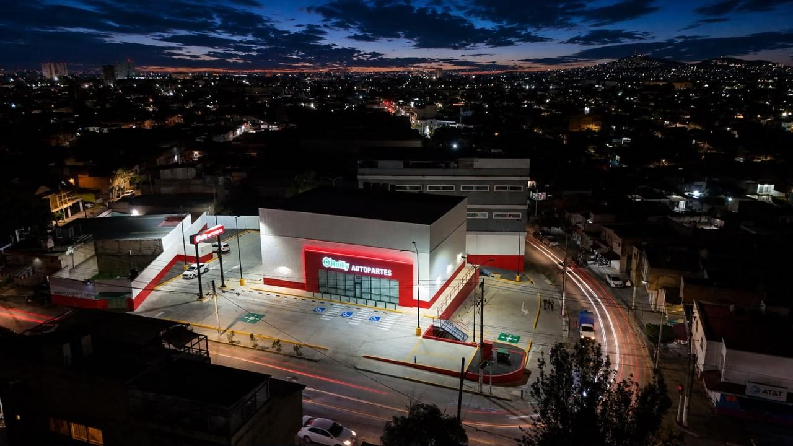
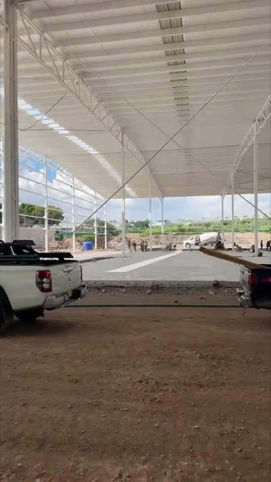
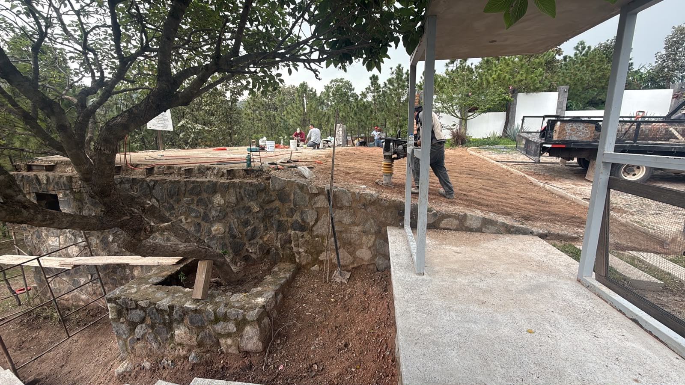
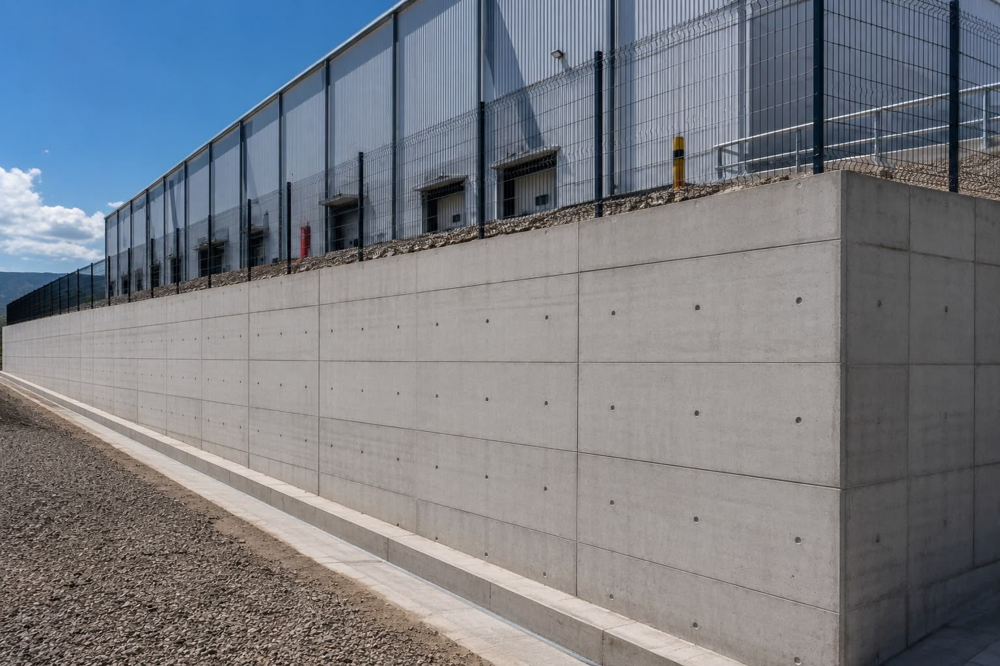
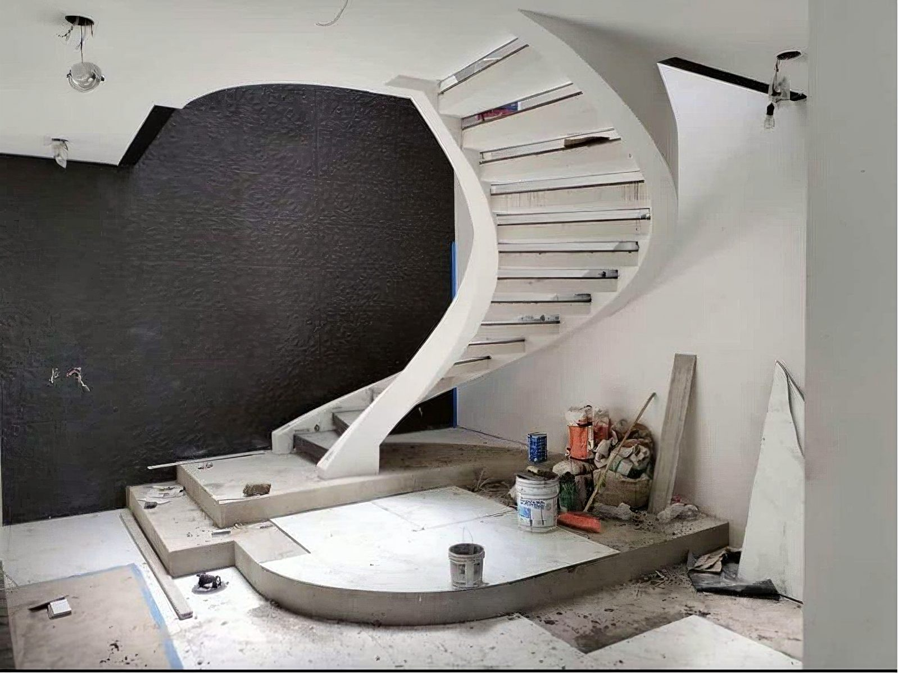
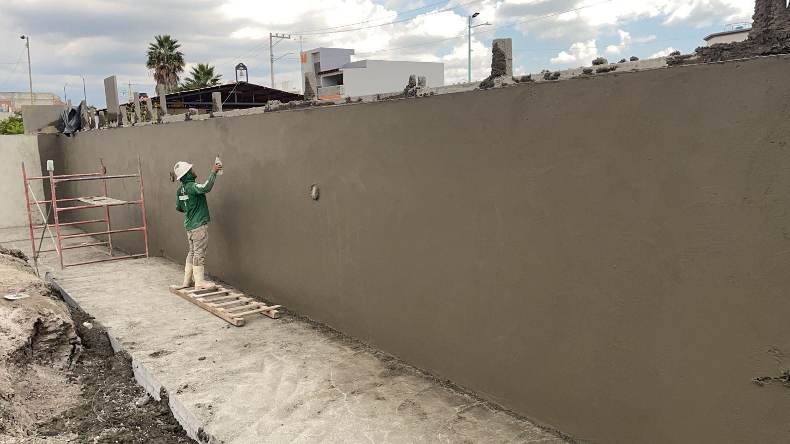

03 — Portafolio
Obra ejecutada
Cimentaciones, muros y estructuras para cadenas comerciales, agencias automotrices, naves industriales y vivienda.
04 — Portafolio
Obra ejecutada
Pendiente de fotografía
↗



Pendiente de fotografía
↗

 En ejecución
En ejecuciónPendiente de fotografía
↗

Pendiente de fotografía
↗

En obra
El trabajo,
mientras sucede
Nada explica mejor un proceso constructivo que verlo. El resto de los videos de obra están dentro de la ficha de cada proyecto.
Han confiado en KROL
Contacto
Hablemos de
tu proyecto
Nosotros nos encargamos del resto.
Mándanos planos o una descripción del alcance y te regresamos presupuesto y programa de obra.
Solicitar presupuesto